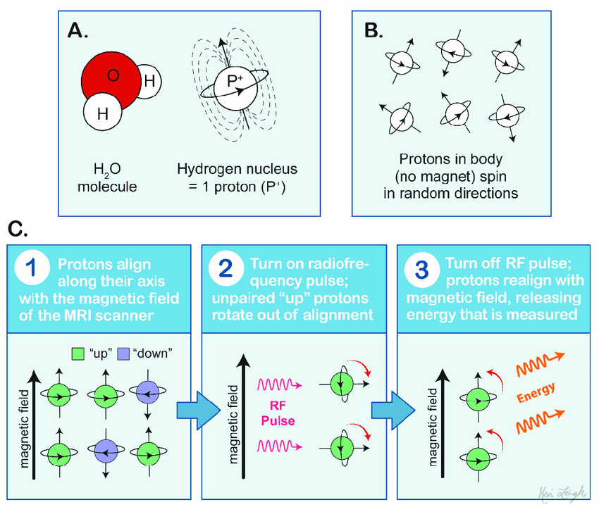

Brain geography and methods
Today’s discussion will focus on the brain “geography.” There’s no “geo-” but the brain is our world.
Points of view
People who work in neuroscience (and anatomy in general) need to refer to anatomical structures from certain points of view. For example, head on, from behind, from above, from below, etc. But like all things scientific (from western perspective), these terms have been assigned latinate names.
When referring to structures relative to others we refer to them using the terms:
- Superior–above
- Inferior–below
- Anterior–in front
- Posterior–behind
So you might say that structure X is ANTERIOR to structure Y, etc. These terms also have less common terms that are also latinate:
- Superior = Dorsal
- Inferior = Ventral
- Anterior = Rostral
- Posterior = Caudal (you don’t see these last two being used very often)

The left and right sides of the brain are called Lateral relative to the middle or Medial region of the brain.
Major landmarks
The brain is divided up into three major parts:
- Brain stem, which is itself divided into three parts (but we wont get into that)
- Cerebellum
- Cerebrum–this is where the vast majority of action happens with respect to cognition, perception, and motor control.
Cerebrum
The cerbrum is divided into two hemispheres, the left and right. The brain is much like a walnut, crack it open and it neatly divides into two halves. The outer layer of the cerebrum is called the cortex (the adjective from cortex is cortical, a term you’ll see a lot in our readings).
Beneath the cortex lie numerous sub-cortical structures. We can see these various structures by examining different “sections” or views of the brain. The sagittal section is one where the brain is presented from a side view (imagine one half of your face/head peeled away from the other half). The axial or horizonatal section is one where slices are taken from the top (imagine removing layers of a cake). And finally the coronal section is examining slices taken front to back but lengthwise (imagine peeling a banana but underneath the peel are successive layers of skin).

The cerebrum is characterized by convolutions which are folds. Why would the brain be crumpled like this? Imagine a crumpled wad of paper. Why is the brain shaped like this and not a smooth ball?
The peaks these convolutions are called gyri ([d͡ʒajɹaj]) and the valleys are called sulci [sʌlkaj] (sing. “sulcus”). The gyri and suci will be important for us because many language-related phenomena are associated with activation along various gyri and sulci.
Lobes
Gyri and sulci delineate the four lobes of the brain:
- Frontal lobe–bordered by the Central sulcus and the Lateral sulcus (Sylvian fissure)
- Temporal lobe–bordered by the Lateral sulcus
- Parietal lobe–bordered by the Central sulcus and the Lateral sulcus
- Occipital lobe–bordered by the Parieto-occipital sulcus

At this point it might be useful to explore the gross structure of the hemispheric and lobe organization using the online tool like Neurotorium. This brain “atlas” lets you interactively explore the cortex and subcortical structure. Check it out!
Sulci divide the lobes, e.g., the lateral sulcus or sylvian fissure lies at the inferior portion of the both the frontal and parietal lobes and marks the superior boundary of the temporal lobe.
Special gyri
There are two gyri that will be important for us because they are implicated in a lot of language processing:
- Primary motor cortex
- Somatosensory cortex
These are gyri that straddle the central sulcus. The primary motor cortex (don’t know why it’s not called “motor gyri”) sends signals to the peripheral nervous system (down the spinal cord and out to your limbs and such) in order to control muscles. The somatosensory cortex receives signals from touch.


Interstingly the neurons (cells which we will describe in a bit) in these two gyri are arranged in clusters that correspond to specific locations/functions in the body. For example, there are clusters associated with the hands, another cluster associated with the feet, or the tongue.
Homunculous man
The distribution of neurons for each part of the body in the motor and somatosensory cortecies is not equal, with certain appendages receiving more innervation (more nerves) and area on the cortex than others. Homunculus man is a 3D representation of this skewed distribution. Notice that the hands and tongue and lips are distorted by their large size, suggesting that those parts of the body get more real estate in the motor and somatosensory cortex.

Terminology
Don’t be suprised when primary research articles abbreviate the names of these cerebral areas. For example, we will often see STG and IFG, which refer to superior tempral gyrus and inferior frontal gyrus respectively. STG is the superior most gyrus of the temporal lobe, while IFG is the inferior most gyrus of the frontal lobe. Don’t balk at looking up these terms!
Micro-anatomy
The cerebral structures we’ve described are general areas that might be active during any cerebral activity, but what exactly is happening when any part of the brain is active, or “lights up”?
The stuff of the nervous system (of which the cerbrum is a major structure), are neurons, of which there are approximately 100 million! The neuron consists of two major parts: the cell body or soma and the axon which is like a long branch extending out from the soma. Dendrite extend from the soma and are shorter than the axon.

As can be seen in the image below, one neuron’s axon “connects” to another neuron’s dendrite. This meeting site is called a synapse, the gap between the axon and the dendrite. It’s at the synapse that an electrochemical reaction takes place allowing one neuron to activate or passing information to another neuron. Groups of neurons are organized into layers in the cortex.
The electric brain
Neurons communicate with other neurons with electrical current. The term used in neuroscientific literature for this electrical current is action potential. The action potential sent along the axon of a particular neuron and evokes a chemical interaction at the synapse, ultimately changing the electrical potential (voltage) of the receiving neuron. This electrical activity is as added or summed across many neurons in a particular area and can be measured.
There are two types of connections between neurons: excititory and inhibitory. An excititory connection increases the probability that the receiving neuron itself fires off an action potential, while an inhibitory connection reduces that probability. Cylces of electrical discharge and rest can occur 1-250Hz.
Cell bodies (the soma) reside on the surface of the cortex, the grey matter of the brain, while the axons lie below making up the white matter.

The white colour of the white matter is a result of the conductive sheath that surrounds the axon called myelin.
Cell bodies are not uniformly lined up in the grey matter, but rather span different layers of grey matter (beyond the scope of this class and perhaps not relevant to language processing). Cell bodies are also clumped together in areas across the cortex according to their neuronal organization, resulting smaller regions that carry out particular functions. Brodmann mapped out 52 such areas across the cortex. These Brodmann Areas are number that refer to specific areas on the cortex. Brodmann Areas are abbreviated “BA” and commonly used in the literature (e.g., BA 45, BA3, etc.)

Imaging the brain
The next section looks at how we might visualize activation in the brain, which in turn tells us about which areas and structures of the brain are active or not during language processing.
MRI
MRI stands for Magnetic Resonance Imaging and is a fundamental tool used in exploration of structural and functional aspects of the brain. The resulting “image” from an MRI is multidimensional picture showing the structure of the brain. When engaged in some task, the brain can be imaged using “fMRI” (Functional MRI) that shows which parts of the brain are active during that task.
But how does it work? MRI relies on the fact that the body (and the brain) is composed of mainly water. The hydrogen atoms of water (H20) contain nuclei whose orientation (their axis) is random.
- The magnet of the MRI aligns the nuclear axes of these atoms in a particular direction.
- A radio frequency pulse then knocks the atoms out of alignment
- The pulse is then turned off and the atoms align again with the magnet. The return to alignment releases energy (the resonance), which is measured by the machine.
- 2D images are stacked, resulting a 3D representation

The spatial unit of the MRI is called the voxel or a volumetric pixel. The voxel is about one cubic mm and contains around 50K neurons. Because of how the hydrogen atoms distributed around the brain the resulting image allows us to distinguish the different structures of the brain.

fMRI
With functional MRI, resarchers examine the areas of the brain that are active when performing a task. This method relies on blood flow. Active areas of the brain require more oxygenated blood, which is tracked by the MRI. The influx of oxygenated blood to the parts of the brain where is this increased neuronal activity is a very slow process.
The change in blood oxygenation creates an MRI signal called the blood oxygenation-level dependent signal or BOLD signal. The resulting image have very good spatial resolution, but by virture of the slow moving oxygenated blood, poor temporal resolution.

EEG
We will read a lot of papers using the method of EEG or electroencephalography. EEG is a common electrophysiological tool that works by placing electrodes on the scalp.
EEG measures the electrical signal (averaged over an area) of the neuronal action potential. Deviation from a baseline neuronal activity is indicative of some response to a stimuli, i.e., the brain is “doing something” as a result of some stimulus. When there is an “event” like this, the EEG signal indicating a deviation is called ERP or event-related potential.
The EEG signal associated with the event, e.g., hearing a particular auditory sitmuli or seeing a word, is averaged over a particular electrode. Crucially it is time-locked. The EEG “signature” has a few features:
- Amplitude–the voltage associated with the event. It is generally in the positive or negative direction relative to baseline. The baseline (non-event signal) is subtracted from the event signal, which will show an amplitude if there is an effect.
- Polarity–In most visual descriptions of the EEG signal, positive is down and negative is up (it’s dumb and confusing, I know).
- Latency–how much time has elapsed since the presentation of the event
- Topography–where on the scalp was the voltage recorded
The main advantage of EEG over MRI is the temporal resolution and cost. The EEG electrodes and amplifier are very responsive to the extremely fast action potential. This is good for language studies where some phenomena, e.g., VOT, occur with differentials on the order of tens of ms. The main disadvantage is the poor spatial resolution. You’re just not certain where in the brain a particular activation is happening, just a general area.
MEG
Magnetoencephalography (MEG) is another technique that captures the electrical activity of neurons at the scalp. But instead of measuring the electric potential directly it measures the magnetic fields generated by the electrical activity.
Magnetic fields are easier to localize relative to electrical currents, so MEG provides both high spatial and temporal resolution. The downside is that it is very expensive (I’m not sure if York even has one, but there are at least one MRI machine and lots of EEG systems).